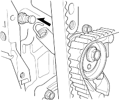
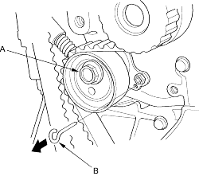
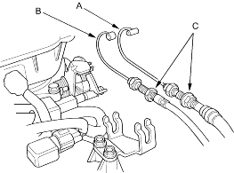

- Install the tensioner spring on the tensioner bolt.

- Rotate the crankshaft pulley 2 turns counter-clockwise so that the timing belt positions on the pulleys.
- Set the No. 1 piston at TDC.
- Tighten the auto-tensioner mounting bolt (A) to 44 Nm (4.5 kgf/m, 33 lbf/ft), then remove the pin (B) from the auto-tensioner.

- Install the remaining parts.
NOTE:
- Use fender covers to avoid damaging painted surfaces.
- To avoid damage, unplug the wiring connectors carefully while holding the connector portion.
- To avoid damaging the cylinder head, wait until the engine coolant temperature drops below 38oC (100oF) before loosening the cylinder head bolts.
- Mark all wiring and hoses to avoid misconnection. Also, be sure that they do not contact other wiring or hoses, or interfere with other parts.
- Make sure you have the anti-theft code for the radio, then write down the frequencies for the radio's preset buttons.
- Disconnect the battery negative terminal.
- Drain the engine coolant (see page 10-8).
- Remove the throttle cable (A) and cruise control cable (B) by loosening the locknuts (C), then slipping the cable ends out of the accelerator linkage. Take care not to bend the cables when removing them. Always replace any kinked cable with a new one.
